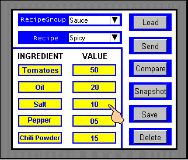
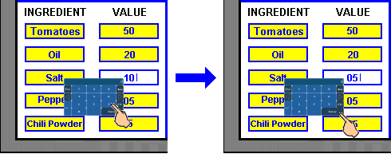
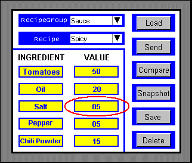

|
|
|
|
|
|
|
|
You can change recipe values on the target machine or on the equipment. This section describes how, at Runtime, you can change values using objects displayed on the target machine.
Select a recipe group and recipe on the target machine, then perform the Load operation to display the recipe data.
For details, see Section 17.6.2.1, Load and View Recipe Data on the Target Machine.

Select an ingredient variable value that you want to change.


The format for referencing recipe ingredient variables is: RecipeGroupName.VariableName
For more information, see Section 6.11, Recipe Variables.
Enter the change you want to make to the ingredient value.

The ingredient value will change on the target machine.

You can now Send the modified recipe data to the equipment or you can Save the recipe data to the recipe group file.
For details about the Send operation, see Section 17.6.2.2, Send Recipe Data to the Controller.
For details about the Save operation, see Section 17.6.7.1, Save Recipe Data.